A game where you build a rocket on a budget, fit a spacecraft with instruments, power and an antenna, and launch it from Kennedy Space Center. The flight runs on real physics, and when something fails the game tells you why.
Watch Xorbit in action
The whole game, mission by mission
The long cut walks through every part of Xorbit: the job, the workshop, the crew, launch, failure, Mission Control, the Moon, Mars and the report. Narrated in English with Spanish subtitles.
From a blank workbench to the Moon
Every mission follows the same loop that real mission designers use: define what you need, design it, check it, fly it and learn from the result.
Read the job
A client hires XORBIT for a mission: weather sensors above 100 km, a satellite in orbit, instruments on the Moon. Each job comes with a budget, a minimum spacecraft mass and the delta-v you need to get there. Houston talks you through it on the radio.
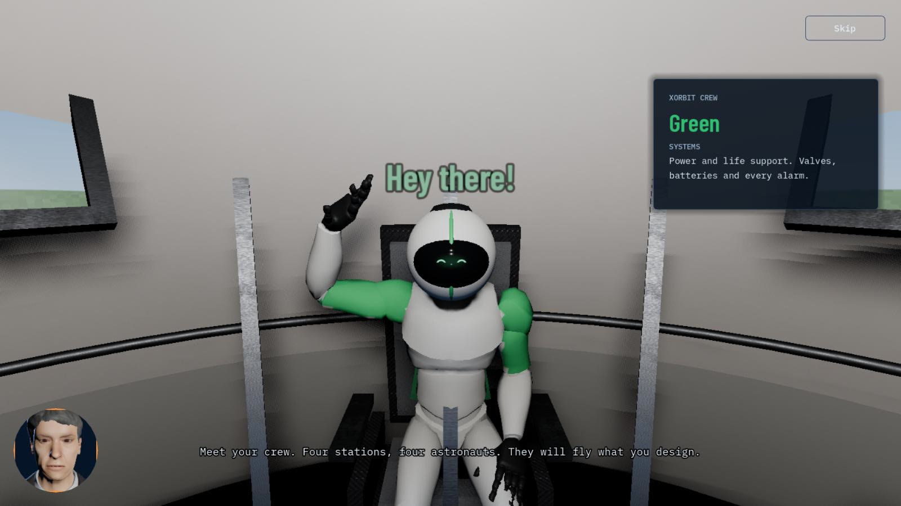
Build the rocket
Stack noses, tanks, engines, fins and decouplers in a VAB-sized hangar, or turn your own parts on a lathe. The analysis panel updates live: delta-v per stage, thrust-to-weight, stability, cost, power, data and lifetime. Load real rockets like the Saturn V or Falcon 9 to see why they work.
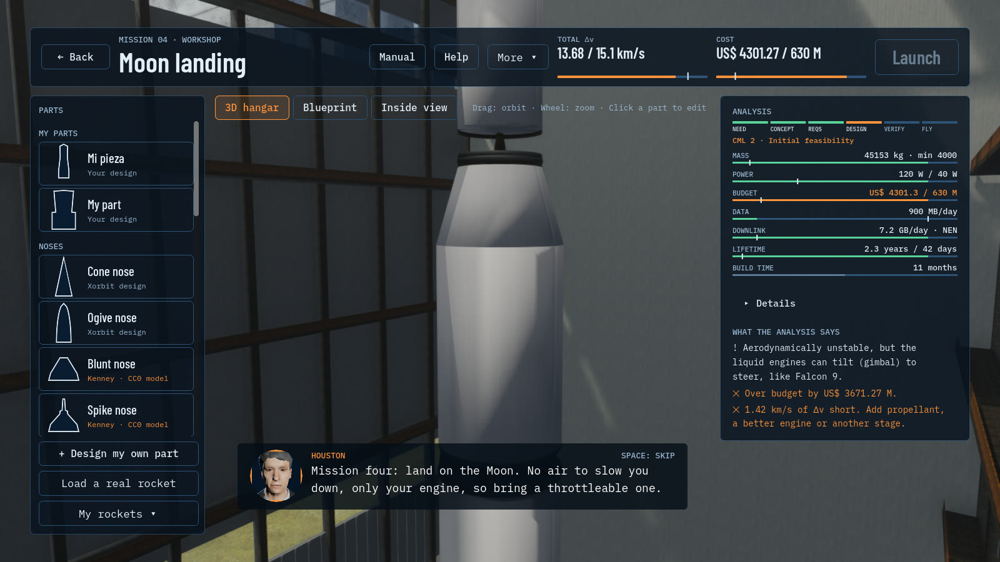
Launch from pad 39A
The crawler carries your rocket to the pad, the countdown runs and the engines light. You watch the real ascent: max-Q, staging, the edge of space and orbit. Up to four players can fly as a crew, each with a station and short challenges during the flight.
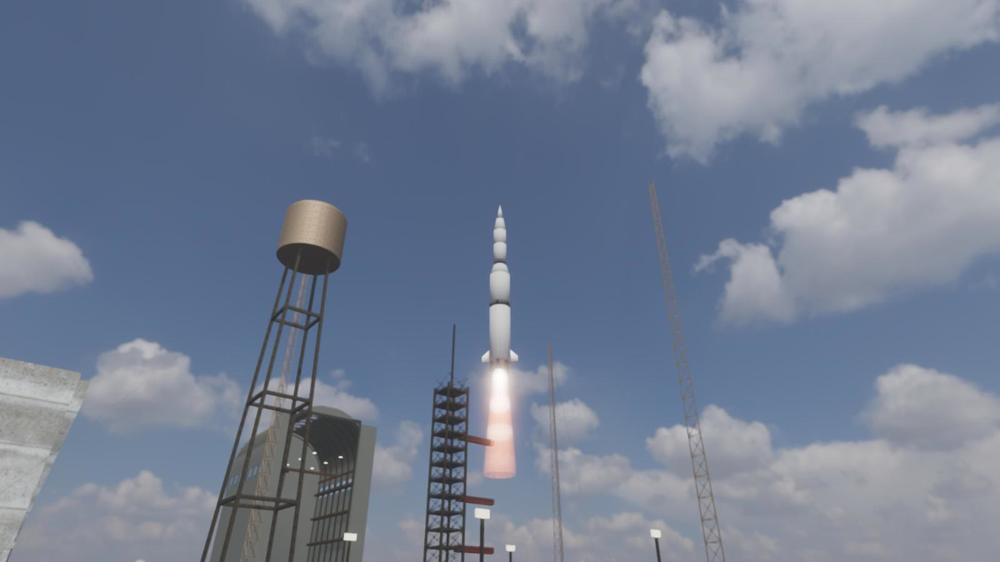
Travel and land
Past low orbit, the flight continues on a map of the Earth-Moon system or the Solar System, burn by burn, with the delta-v of each manoeuvre. On the Moon you guide the descent, step out with lunar gravity and plant the flag. On Mars, the sky crane lowers the rover.
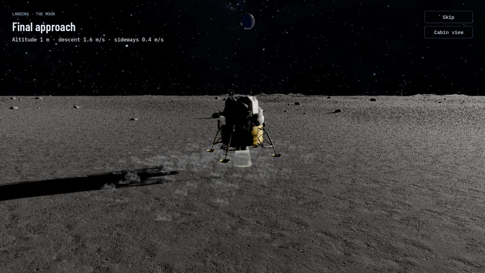
Learn why
The report shows how far you got and why: not enough delta-v, unstable in the air, too much g for the crew, over budget. Stars reward reaching the goal, saving money and doing the science. Then you go back to the workshop and fix it.
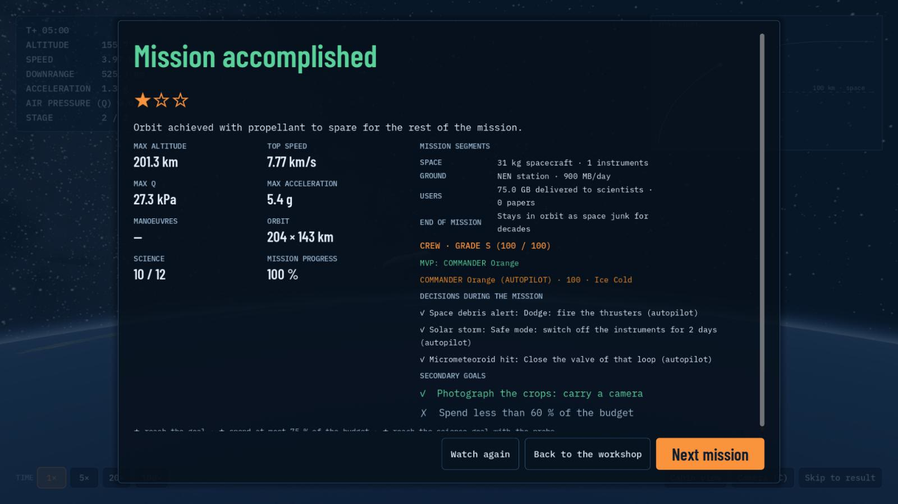
Each one asks for more delta-v
Every mission adds budget and unlocks new parts. The first ones come with a guided tutorial.
- 00Reach spaceΔv 2.0 km/s
- 01Low Earth orbitΔv 9.4 km/s
- 02Geostationary orbitΔv 13.3 km/s
- 03Lunar orbitΔv 13.4 km/s
- 04Moon landingΔv 15.1 km/s
- 05Mars orbitΔv 15.1 km/s
- 06Mars roverΔv 13.6 km/s
- 07JupiterΔv 15.7 km/s
- 08Leave the Solar SystemΔv 18.2 km/s
- 09The starsFuture tech
How Xorbit answers Space Mission Design Game
The challenge asks for a game where players design a complete space mission under real constraints. This is what we built for that.
A real budget
Cost comes from mass and material, engines, propellant, launch operations and years of ground station time (NEN or the Deep Space Network).
The spacecraft resources
Mass, power, data per day against downlink, communications, lifetime under the destination's radiation and build time: the resources NASA lists in the challenge documents.
Four mission segments
Launch, space, ground and users. The report tells you what each segment delivered, including how much data reached the scientists.
Concept maturity levels
The workshop follows NASA's Concept Maturity Levels, from the first need to a design that is ready to fly.
Real physics
The Tsiolkovsky equation per stage, thrust-to-weight, drag with Mach, centre of mass against centre of pressure, structural limits and Hohmann transfers. Nothing in the flight is scripted.
Real data
Planets from NASA's Planetary Fact Sheet, real engines, NASA 3D models of the Saturn V, the crawler and the VAB, and Apollo 11 sounds.
Inside the game
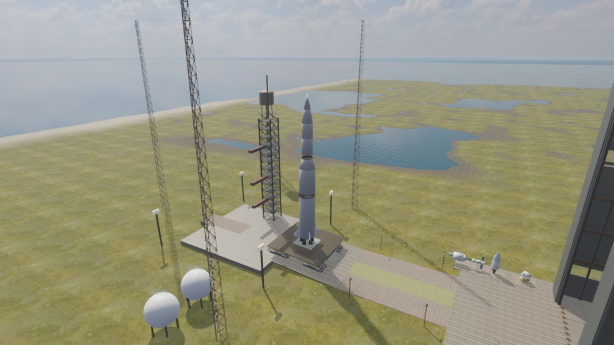
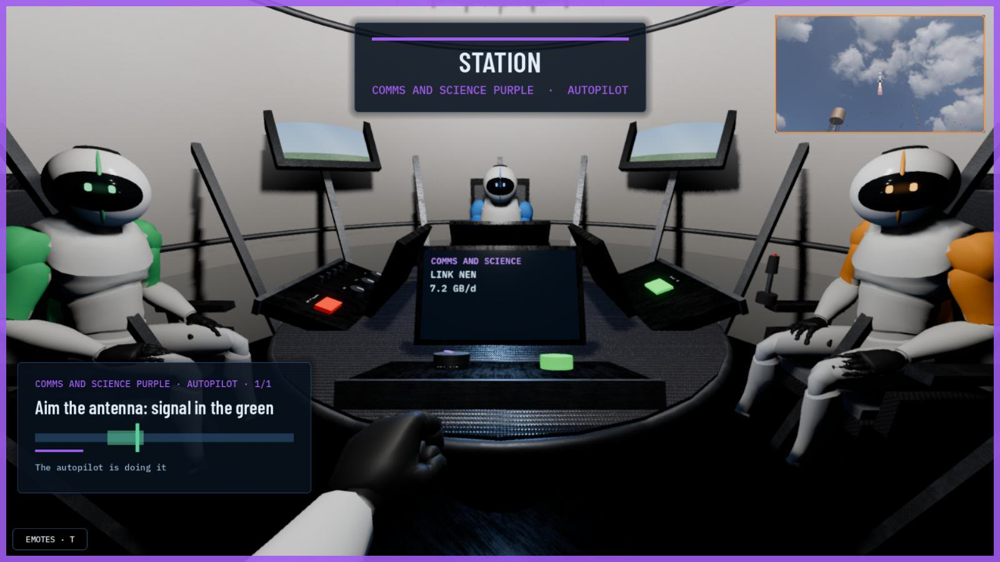
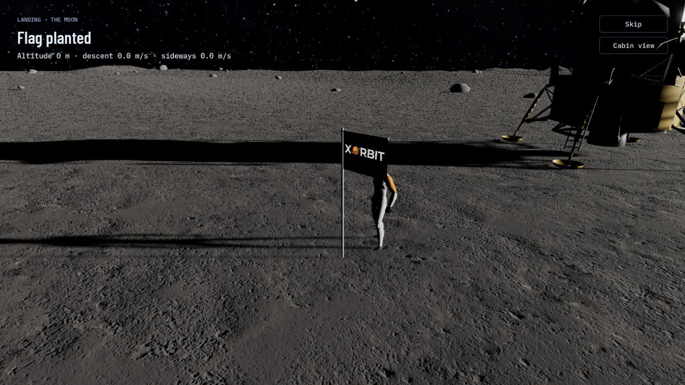
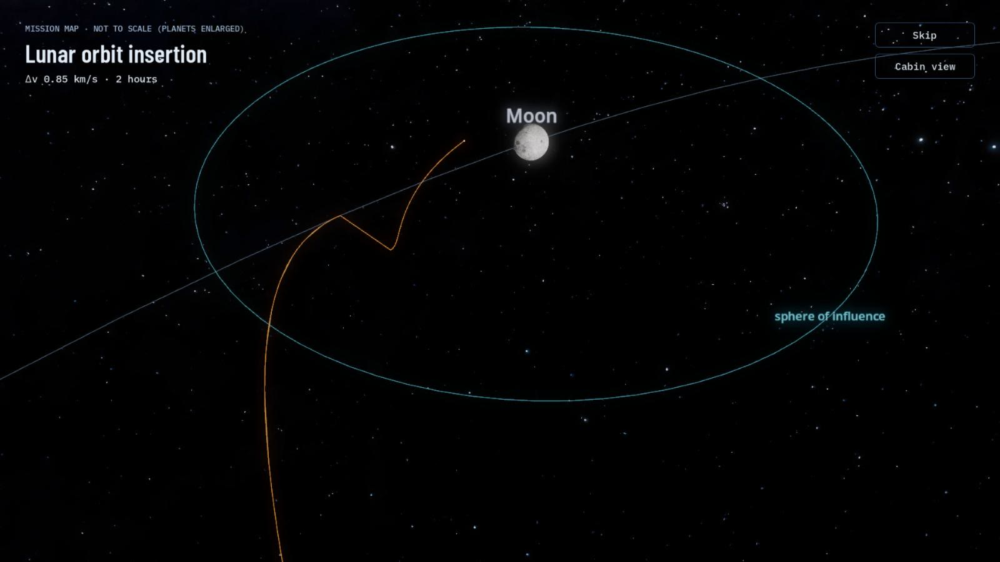
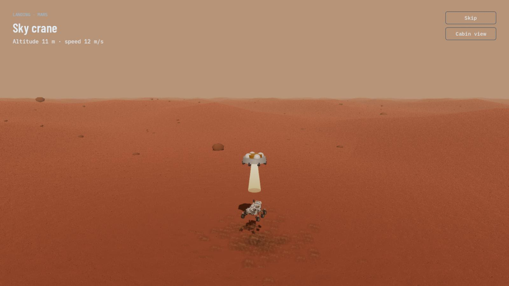
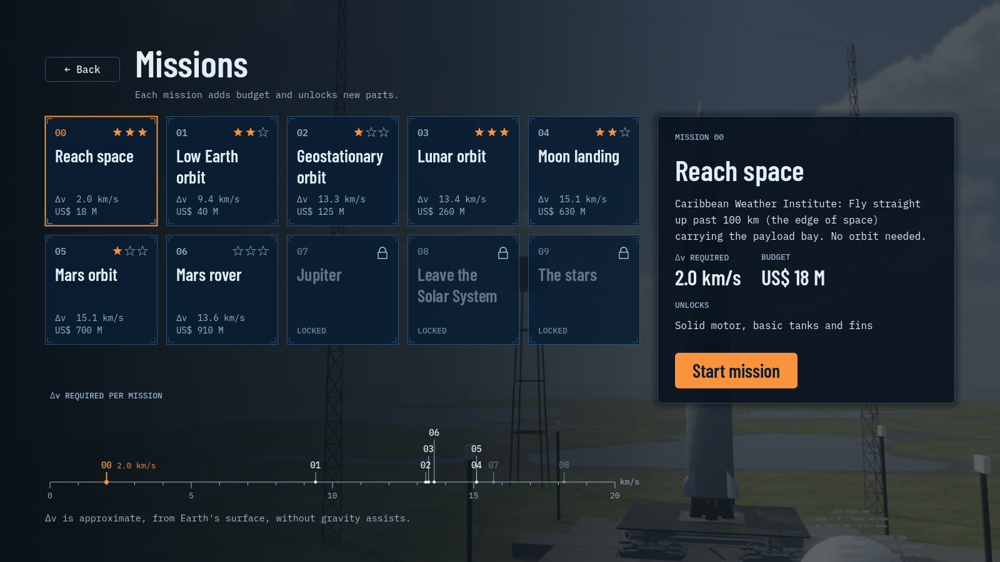
Play Xorbit
- Download Xorbit-Windows.zip.
- Unzip it and open Xorbit.exe.
- Pick English or Spanish on the main menu.
Windows 10 or 11, 64-bit. A dedicated graphics card is recommended. Keyboard and mouse or gamepads (DualShock, Xbox, Joy-Con).
Made in Barranquilla, Colombia
Team
Sebastián · María Cecilia
NASA
3D models from NASA 3D Resources, Apollo 11 and launch audio, Blue Marble and City Lights, Planetary Fact Sheet, MMRTG and NSTAR fact sheets.
Free assets
Kenney, Quaternius, Poly Haven, ambientCG, MakeHuman (CC0) · Solar System Scope (CC BY 4.0) · Wikimedia Commons
Music
OpenGameArt (CC0): yd, Centurion_of_war, Yoiyami, vitalezzz, Ville Nousiainen and XCVG, cynicmusic, allen yatsura.
Tools and data
Godot Engine 4.7 (MIT) · oddurs/tsi (MIT) · Barlow Condensed and IBM Plex Mono (OFL)
Inspiration
Kerbal Space Program · The Open Space Program